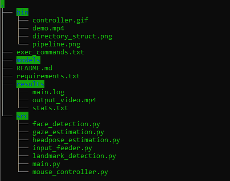

Computer Pointer Controller
Computer Pointer Controller
Computer Pointer Controller is a smart application which leverages pre-trained OpenVino models wherein it infers the gaze direction of the subject in a video or webcam feed, and moves the mouse pointer accordingly in that direction.

Aim
- To develop a smart application that infers the gaze direction of the subject in a video or webcam feed, and moves the mouse pointer accordingly in that direction
- Leverage image processing and pre-trained OpenVINO-models based inference to deliver real-time results
- Analyze the impact of model precision, type of input video streaming, and the effect of various edge cases and their effect on the results
Project Set Up and Installation
Setup Details
| Details | |
|---|---|
| Programming Language | Python 3.6 |
| OpenVino Toolkit Version | 2020.3 |
| Hardware Used | Intel CPU i7 3rd Gen |
| Enviroments Used | Windows WSL, Ubuntu 18.04 |
OpenVino installation guide can be found here.
Directory Structure
Application Workflow Pipeline

Benchmarks
Performance Evaluation on CPU
Total frames analyzed: 59
Face Detection Model takes nearly 287 ms of load time and 38 ms of total inference time.
Model Load Time
| Model | FP16 | FP32 | FP16-INT8 |
|---|---|---|---|
| Facial Landmarks Detection | 122.802 ms | 205.130 ms | 558.811 ms |
| Headpose Estimation | 187.159 ms | 340.448 ms | 375.702 ms |
| Gaze Estimation | 206.344 ms | 361.897 ms | 455.502 ms |
| Total Load Time | 0.82 s | 1.188 s | 1.67 s |
Model Inference Time
| Model | FP16 | FP32 | FP16-INT8 |
|---|---|---|---|
| Facial Landmarks Detection | 1.0 ms | 1.0 ms | 1.1 ms |
| Headpose Estimation | 2.7 ms | 2.7 ms | 2.6 ms |
| Gaze Estimation | 3.4 ms | 3.3 ms | 2.5 ms |
| Total Inference Time | 11.1 s | 11.4 s | 11.7 s |
| FPS | 5.315 | 5.363 | 5.042 |
The inference times with respect to the models depict the average inference time per frame.
Results
- The results have been benchmarked on async inference
- Model Load time for FP16 is the least, followed by FP32, followed by INT8
- Average inference time is greatest for INT8, followed by FP32, followed by FP16, which may be attributed to the trade-off between greater information involved in the computation of models having relatively higher precision and the hardware architecture of the system under use.
- A decrease in the model precision leads to loss of the model accuracy at the cost of increasing the inference speed.
- Frames are processed relatively faster in FP32, followed by FP16 and then INT8.
Edge Cases
- In case a person is not detected in the frame, the incident is logged and processing moves on to the next frame in the queue.
- In case of multiple persons in the frame, only the face of the first person to be detected will be used in the further processing.
- In case the new mouse corrdinates from gaze estimation cannot be accomodated on the current screen resolution, the event is logged and processing moves onto next frame in the sequence.
Rajkumar Vaghashiya
MS in Computer Science
My research interests include applied machine learning and computer vision.